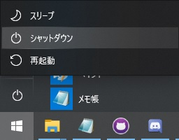

PC基礎講習/起動
概要
部屋を離れる時に照明を付けたままにして、文句を言われたことはあると思います。
電気代がもったいないですし、稼働中の部品はだんだんと劣化していくからです。
これは照明に限らず、コンピュータも使わないときには停止しておくのがよいのです。
もちろん、使うときには起動しなければなりませんから、今回はその方法を学びます。
重要語
アカウント
コンピュータを使用する権利
パスワード
アカウントを持つ証明のための鍵
PIN
デバイスの鍵
シャットダウン
PCの動作を完全に停止させること
必要語
今回の必要語はありません。
アカウント
アカウントとは、コンピュータを使用する権利のことです。
いろいろな組織がアカウントを発行していますが、基本的にはサービスの提供者からのものを使います。
WindowsはMicrosoft社の製品なので、Microsoftが発行するアカウントを使います。
PCの起動
電源/マウスなど、必要な周辺機器を接続し、電源ボタンを押します。
電源ボタンの場所は機種によってまちまちですが、物理部のノートPCではキーボードの左上か右上についています。

アカウント選択
起動後、左下にアカウントが複数表示される場合があります。
物理部のPCでは、管理者用と一般部員用があるので、後者を選択してください。
私物のPCでも、家族との共有などで、複数のアカウントが入っている場合もあると思います。
その場合は、自分の、あるいは自分が使ってよいアカウントを選択してください。
パスワード/PIN
アカウントはコンピュータを使う権利だと前節に書きましたが、不特定多数に使われては困ります。
しばしば報道されるように、乗っ取りや個人情報の流失につながってしまうのです。
そこで、単語を決めておき、アカウントの所有者以外には知られないようにします。
この単語をアカウントのパスワードといいます。
パスワードの入力
アカウントを選択し、画面中央の入力欄に入力します。
Enterキーを押し、パスワードが正しければPCを使えるようになります。
なお、アカウントの認証をすることをログインということもあります。
PIN
WindowsのPINは、アカウント毎ではなくデバイス固有のパスワードです。
複数台のデバイスを持っている場合、PINを見られても被害は最小限で済みます。
ただし、Windowsではアカウントのパスワードでも入れるので、パスワードを広めてはいけないことに変わりはありません。
物理部のPCはPINでログインするようにしています。
PINもホームページに載せていいものではないので、使うときに訊いてください。
シャットダウン
最初に書いたように、コンピュータは使ったら停止しなければなりません。
これをシャットダウンといいます。
シャットダウン
シャットダウンする前に、すべてのアプリケーションをきちんと閉じたことを確認しましょう。
編集中の文章などを保存せずにシャットダウンすると、成果が消え失せたりします。
確認したら、画面左下にある、Windowsのロゴをクリックしてください。
すぐ上にある電源マークをクリックし、シャットダウンを押します。
